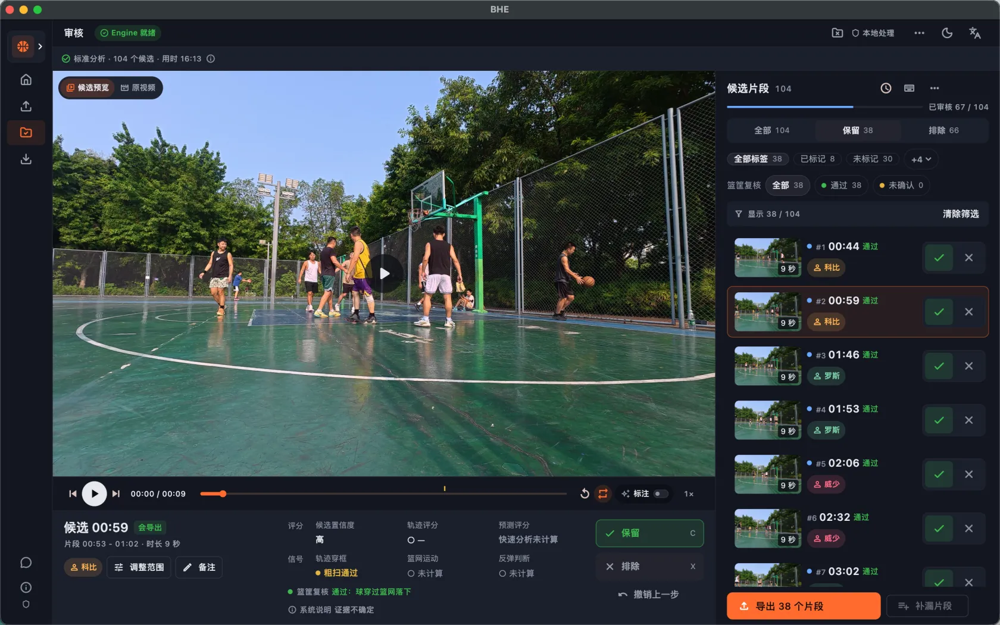
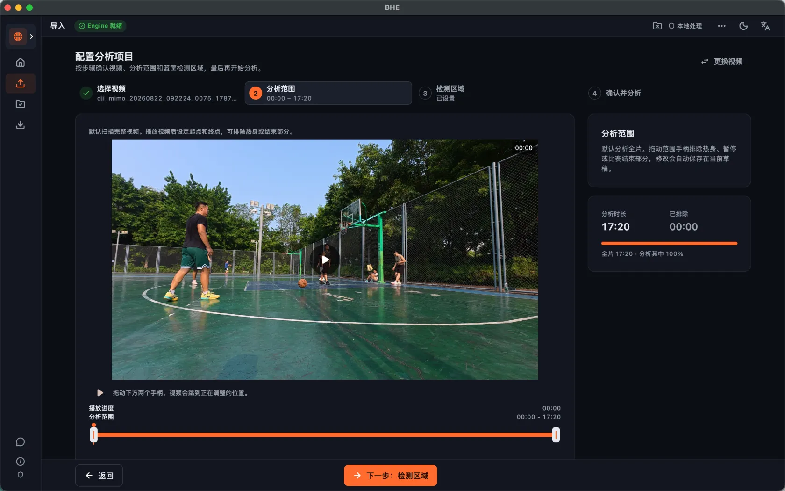
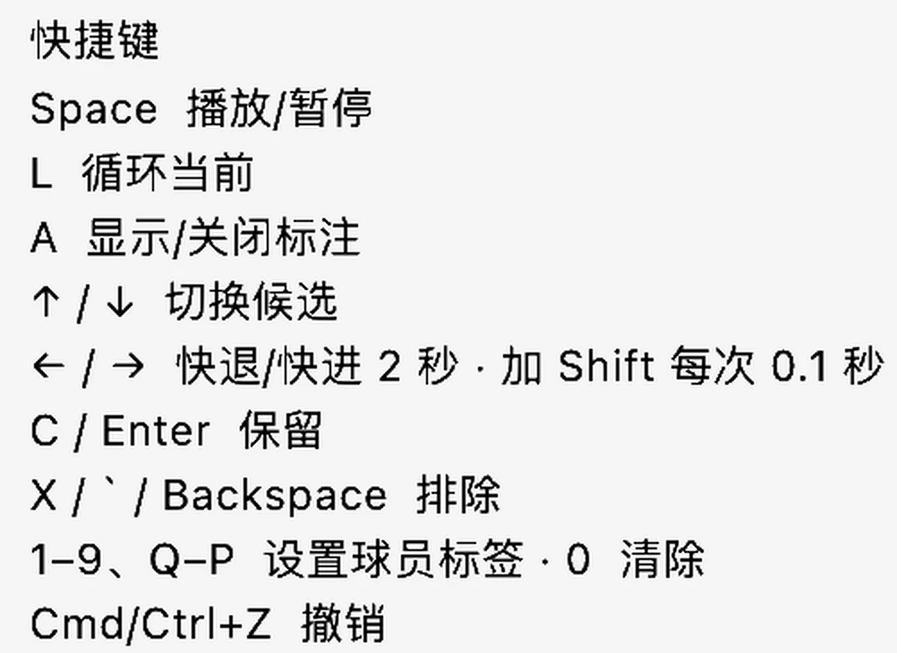
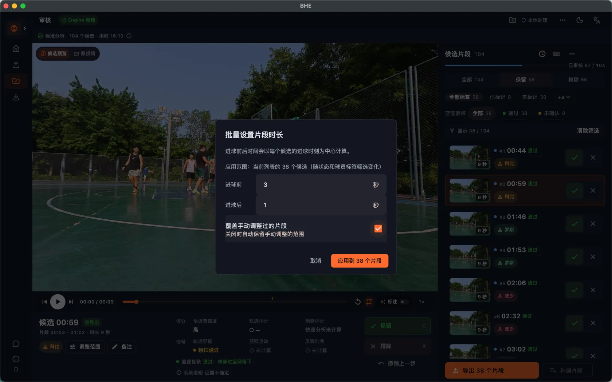
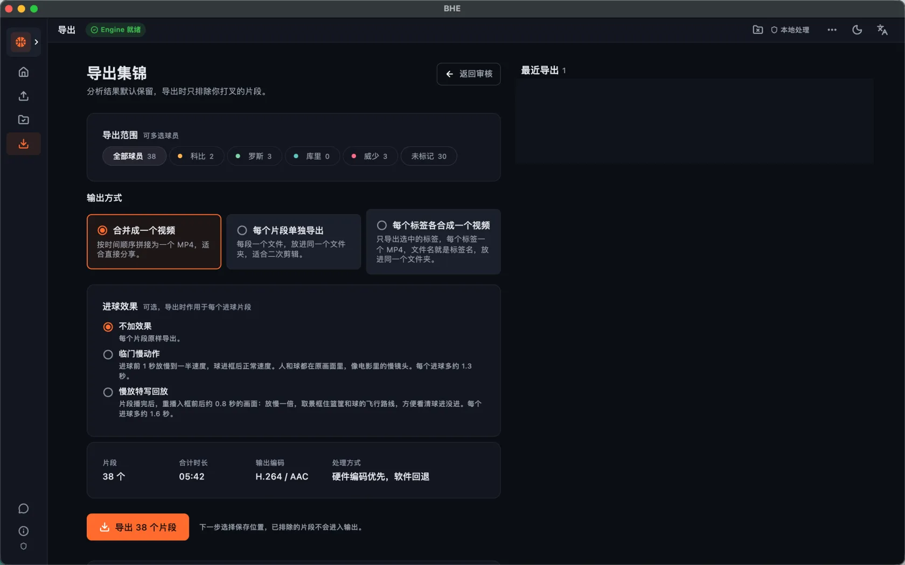
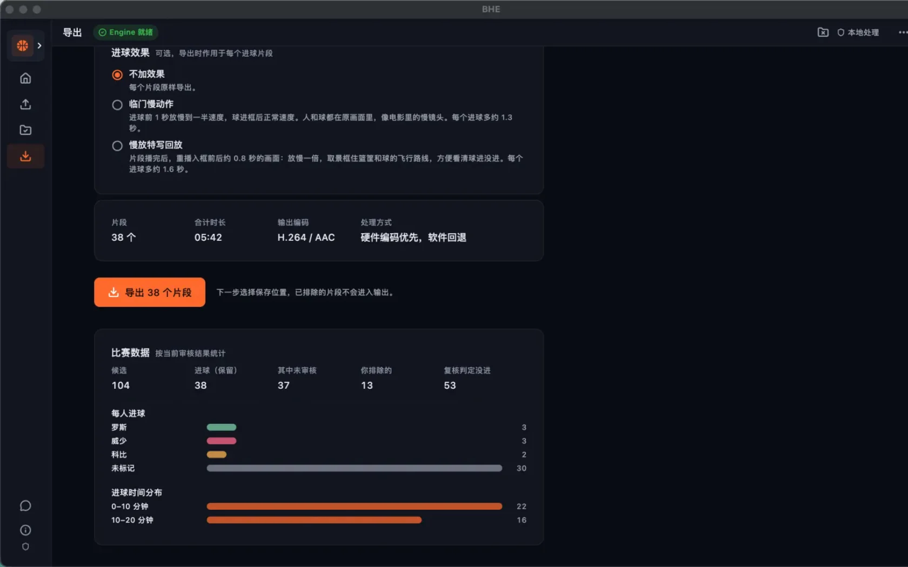
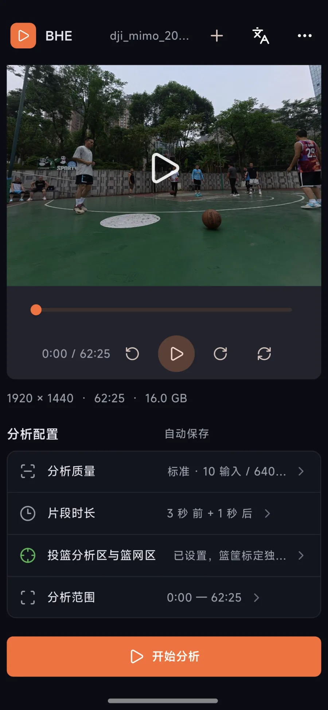
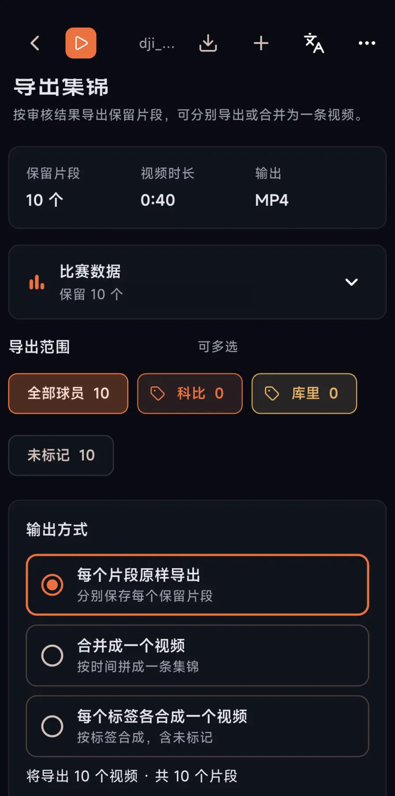

FIND
机器负责找，你只负责判断。
候选默认全部保留，你只排除误检。漏掉的片段，随时补进来。

- 整场视频放进去，疑似进球自动排好队
- 一场球分好几段录，也放在同一个项目里
- 一般不用精确重新框篮筐，大部分覆盖篮筐就行；识别不准再自己拖

先选好要分析的范围。
导入后可以调整视频起止时间，跳过热身或比赛结束的部分。

快
手不离键盘，审得很快。
倍速开到 1.5 或 2，很快过一遍。想看清楚，就放慢速度。
1.5×2× 倍速
↑↓ 上一个 / 下一个片段
←→ 快退 / 快进
X 打叉排除
1–9 Q起 打球员标签
⌘/Ctrl+Z 撤销
球员多的话，第 10 位起用 Q、W、E……；0 清除标签。

准
该留多久，你说了算。
- 默认进球前 3 秒、后 1 秒，全局可调；已处理过的片段也能单独再调
- 想额外加几个片段，用「补漏片段」直接选取
- 调过的片段会标「已调整」，重叠的会标出来

分
一场球，一次出好几份。
标签分组可以保存，下次直接导入，不用每次新建。导出时选球员或标签，个人集锦、三分集锦一次出好。
- 标签有区分，球员、三分、扣篮各是各的
- 合并成一条，或每个片段单独一个文件
- 慢动作：导出时可加，不想要就不选
- 大概的数据统计：只是估算，可能不准，仅供参考

导出前看一眼比赛数据。
按审核结果查看每人进球和时间分布；命中率只是估算，可能不准，仅供参考。
≈ 4.5 分钟
10 分钟的视频，在骁龙 8 至尊版第五代手机上约 4.5 分钟分析完。其他手机会慢一些；电脑有显卡的话也更快。
出处：README，v0.1.9 更新说明（骁龙 8 至尊版第五代，Android）
MOBILE
安卓手机上也能用。
分析、审核、导出都在手机上完成，视频同样不上传。有项目列表，分析前选球员分组，审核可撤销，导出可选三种方式。
iPhone 目前能播放、审核、导出，还不能分析。


从导入到导出，完整走一遍
HONEST SCOPE
先说清楚它适合什么视频。
固定机位
机位最好在弧顶，大约 45 度角，或在场边 Logo 的位置，篮筐拍清楚。
一次一个篮筐
全场来回跑的视频目前还不支持，可以只拍一边。
电脑和安卓能分析
iPhone 目前能播放、审核、导出，还不能分析。
DOWNLOAD
选你的系统，直接下载。
macOS · Intel
Windows
Android
如果对您有帮助，请作者喝杯咖啡

BHE 用户交流群：扫码加微信，备注「进群」
Mac 首次打开要右键选「打开」；安卓需允许安装未知来源应用，当前是测试包，不是应用商店正式版。每个包在 GitHub Release 附带 .sha256 校验文件。
FAQ
常见问题
需要联网吗？会上传我的视频吗？
分析、预览、审核、导出全部在本机完成，不需要账号，也不上传视频。下载安装包和查看文档需要网络。
真的免费吗？
开源项目，MIT 协议，不按时长、不限次数收费。模型和素材请遵守各自的授权条件。
识别不准怎么办？
候选默认全部保留，误检由你排除；时间边界可以拖动微调，漏掉的片段可以手动补。机器给的只是初稿。
支持全场吗？
暂时不支持，一次只认一个篮筐，需要固定机位。
iPhone 能用吗？
iPhone 目前能播放、审核和导出，还不能分析。